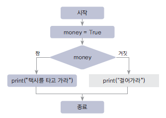
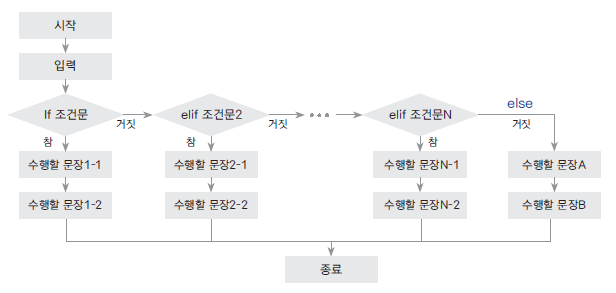
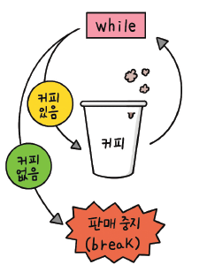
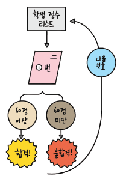
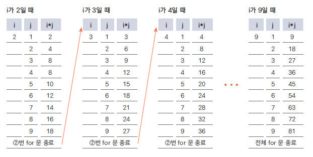

money = True
if money:
print("택시를 타고 가라")
else:
print("걸어 가라")택시를 타고 가라이번 실습에서는 프로그램 구조문에 대한 기초에 대해서 학습 할 예정이다. 위성자료 및 지구환경과학 데이터 프로그램 코딩에 필수적으로 사용되는 과정이다.
모든 런타임 재설정 이 뜰 텐데 예를 눌러준다.쉽게 실행보는법을 따라왔다면 Colab에서 임시 노트북으로 열리기 때문에 파일->드라이브로 저장을 눌러서 여러분의 구글 드라이브에 저장하거나 파일 -> .ipynb 다운로드를 눌러서 다운로드 해준다.
‘돈이 있으면 택시를 타고 가고, 돈이 없으면 걸어간다.’
프로그래밍에서 조건을 판단하여 해당 조건에 맞는 상황을 수행하는 데 쓰는 것이 바로 if 문이다.
파이썬에서는 위와 같은 상황을 다음과 같이 표현할 수 있다.
money에 True를 대입했으므로 money는 참이다.
따라서 if 문 다음 문장이 수행되어 택시를 타고 가라가 출력된다.
다음 순서도는 ’택시를 타고 가라’라는 문장이 출력되는 과정을 보여 준다.
이렇게 프로그램 실행 과정을 순서도로 그려 보면 훨씬 이해하기 쉽다.

다음은 if와 else를 사용한 조건문의 기본 구조이다.
조건문을 테스트해서 참이면 if 문 바로 다음 문장(if 블록)들을 수행하고
조건문이 거짓이면 else 문 다음 문장(else 블록)들을 수행하게 된다.
따라서 else 문은 if 문 없이 독립적으로 사용할 수 없다.
indetation) 방법 알아보기if 문을 만들 때는 if 조건문: 바로 다음 문장부터 if 문에 속하는 모든 문장에 들여쓰기(indentation)를 해야 한다.
다음 예를 보면 조건문이 참일 경우 ’수행할_문장1’을 들여쓰기했고 ’수행할_문장2’와 ’수행할_문장3’도 들여쓰기했다.
다른 프로그래밍 언어를 사용해 온 사람들은 파이썬에서 ’수행할_문장’을 들여쓰기하는 것을 무시하는 경우가 많으므로 더 주의해야 한다.
다른 프로그램에서는 조건문이 끝나는 시점에 대한 Close를 수행한다.
다음처럼 작성하면 오류가 발생한다. ’수행할_문장2’를 들여쓰기하지 않았기 때문이다.
Cell In[6], line 5 print("가라") ^ IndentationError: unexpected indent
다음과 같은 경우에도 오류가 발생한다.
’수행할_문장3’을 들여쓰기했지만, ’수행할_문장1’이나 ’수행할_문장2’와 들여쓰기의 깊이가 다르다.
즉, 들여쓰기는 언제나 같은 깊이로 해야 한다.
일반적으로 tab이나 4 space 로 구분
요즘 파이썬 커뮤니티에서는 들여쓰기를 할 때 공백 문자 4개를 사용하는 것을 권장한다.
또한 파이썬 에디터는 대부분 탭 문자로 들여쓰기를 하더라도 탭 문자를 공백 문자 4개로 자동 변환하는 기능을 갖추고 있다.
if 조건문 뒤에는 반드시 콜론(:)이 붙는다.
어떤 특별한 의미가 있다기보다는 파이썬의 문법 구조이다.
앞으로 배울 while이나 for, def, class도 역시 문장의 끝에 콜론(:)이 항상 들어간다.
초보자들은 이 콜론(:)을 빠뜨리는 경우가 많으므로 특히 주의하자.
if 조건문에서 ’조건문’이란 참과 거짓을 판단하는 문장을 말한다.
앞에서 살펴본 택시 예제에서 조건문은 money가 된다.
money는 True이기 때문에 조건이 참이 되어 if 문 다음 문장을 수행한다.
이번에는 조건문에 비교 연산자(<, >, ==, !=, >=, <=)를 쓰는 방법에 대해 알아보자.
다음 표는 비교 연산자를 잘 설명해 준다.
| 비교연산자 | 설명 |
|---|---|
| x < y | x가 y보다 작다. |
| x > y | x가 y보다 크다. |
| x == y | x와 y가 같다. |
| x != y | x와 y가 같지 않다. |
| x >= y | x가 y보다 크거나 같다. |
| x <= y | x가 y보다 작거나 같다. |
이제 이 연산자를 어떻게 사용하는지 알아보자.
x와 y는 같지 않다.
따라서 위 조건문은 참이므로 True를 리턴한다.
사용법을 알아봤으므로 이제 응용해 보자. 앞에서 살펴본 택시 예제를 다음처럼 바꾸려면 어떻게 해야 할까?
Q1. 만약 3000원 이상의 돈을 가지고 있으면 택시를 타고 가고, 그렇지 않으면 걸어가라.
걸어가라!! ☞☞조건을 판단하기 위해 사용하는 다른 연산자로는 and, or, not이 있다.
각각의 연산자는 다음처럼 동작한다.
| 연산자 | 설명 |
|---|---|
| x or y | x와 y 둘 중 하나만 참이어도 참이다. |
| x and y | x와 y 모두 참이어야 참이다. |
| not x | x가 거짓이면 참이다. |
다음 예를 통해 or 연산자의 사용법을 알아보자.
Q2. ‘돈이 3000원 이상 있거나 카드가 있다면 택시를 타고 가고, 그렇지 않으면 걸어가라.’
파이썬은 다른 프로그래밍 언어에서 쉽게 볼 수 없는 재미있는 조건문도 제공한다.
바로 다음과 같은 것들이다.
| in | not in |
|---|---|
| x in 리스트 | x not in 리스트 |
| x in 튜플 | x not in 튜플 |
| x in 문자열 | x not in 문자열 |
영어 단어 in의 뜻이 ’~안에’라는 것을 생각해 보면 다음 예가 쉽게 이해될 것이다.
다음은 튜플과 문자열에 in과 not in을 적용한 예이다.
각각의 결과가 나온 이유는 쉽게 유추할 수 있다.
pocket = ['paper', 'cellphone', 'money']
if 'money' in pocket:
print('택시를 타고 가라')
else:
print('걸어가라')택시를 타고 가라[‘paper’, ‘cellphone’, ‘money’] 리스트 안에 ‘money’가 있으므로 ’money’ in pocket은 참이 된다.
따라서 if 문에 속한 문장이 수행된다.
가끔 조건문의 참, 거짓에 따라 실행할 행동을 정의할 때나 아무런 일도 하지 않도록 설정하고 싶을 때가 있다.
다음 예를 살펴 보자.
pocket 리스트 안에 money 문자열이 있기 때문에 if 문 다음 문장인 pass가 수행되고 아무런 결과값도 보여 주지 않는다.
if와 else만으로는 다양한(여러) 조건을 판단하기 어렵다.
다음 예를 보더라도 if와 else만으로는 조건을 판단하는 데 어려움을 겪게 된다는 것을 알 수 있다.
‘주머니에 돈이 있으면 택시를 타고 가고, 주머니에 돈은 없지만 카드가 있으면 택시를 타고 가고, 돈도 없고 카드도 없으면 걸어가라.’
pocket = ['paper', 'cellphone']
card = True
if 'money' in pocket:
print('택시를 타고가라')
else:
if card:
print('카드를 가지고 택시를 타고 가라')
else:
print('걸어가라ㅜㅜ')
카드를 가지고 택시를 타고 가라pocket = ['paper', 'cellphone']
card = True
if 'money' in pocket:
print("택시를 타고가라")
elif card:
print("택시를 타고가라")
else:
print("걸어가라")택시를 타고가라즉, elif는 이전 조건문이 거짓일 때 수행된다.
if, elif, else를 모두 사용할 때 기본 구조는 다음과 같다.

앞의 pass를 사용한 예를 보면 if 문 다음에 수행할 문장이 한 줄이고 else 문 다음에 수행할 문장도 한 줄밖에 되지 않는다.
다음 코드를 살펴보자.
score가 60 이상일 경우 message에 문자열 “success”, 아닐 경우에는 문자열 “failure”를 대입하는 코드이다.
파이썬의 조건부 표현식(conditional expression)을 사용하면 위 코드를 다음과 같이 간단히 표현할 수 있다.
조건부 표현식은 다음과 같이 정의한다.
변수 = 조건문이_참인_경우의_값 if 조건문 else 조건문이_거짓인_경우의_값
조건부 표현식은 가독성에 유리하고 한 줄로 작성할 수 있어 활용성이 좋다.
문장을 반복해서 수행해야 할 경우 while 문을 사용한다.
그래서 while 문을 반복문이라고도 부른다.
다음은 while 문의 기본 구조이다.
while 문은 조건문이 참인 동안 while 문에 속한 문장들이 반복해서 수행된다.
’열 번 찍어 안 넘어가는 나무 없다’라는 속담을 파이썬 프로그램으로 만들면 다음과 같다.
treeHit = 0
while treeHit < 10:
treeHit = treeHit + 1
print("나무를 %d번 찍었습니다." % treeHit)
if treeHit == 10:
print("나무 넘어갑니다.")나무를 1번 찍었습니다.
나무를 2번 찍었습니다.
나무를 3번 찍었습니다.
나무를 4번 찍었습니다.
나무를 5번 찍었습니다.
나무를 6번 찍었습니다.
나무를 7번 찍었습니다.
나무를 8번 찍었습니다.
나무를 9번 찍었습니다.
나무를 10번 찍었습니다.
나무 넘어갑니다.treeHit = 0
while treeHit < 20:
treeHit = treeHit + 1
print("나무를 %d번 찍었습니다." % treeHit)
if treeHit == 20:
print("나무 넘어갑니다.")나무를 1번 찍었습니다.
나무를 2번 찍었습니다.
나무를 3번 찍었습니다.
나무를 4번 찍었습니다.
나무를 5번 찍었습니다.
나무를 6번 찍었습니다.
나무를 7번 찍었습니다.
나무를 8번 찍었습니다.
나무를 9번 찍었습니다.
나무를 10번 찍었습니다.
나무를 11번 찍었습니다.
나무를 12번 찍었습니다.
나무를 13번 찍었습니다.
나무를 14번 찍었습니다.
나무를 15번 찍었습니다.
나무를 16번 찍었습니다.
나무를 17번 찍었습니다.
나무를 18번 찍었습니다.
나무를 19번 찍었습니다.
나무를 20번 찍었습니다.
나무 넘어갑니다.treeHit = treeHit + 1은 프로그래밍을 할 때 매우 자주 사용하는 기법이다.
treeHit 값을 1만큼씩 증가시킬 목적으로 사용하며 treeHit += 1처럼 작성해도 된다.
| treeHit | 조건문 | 조건 판단 | 수행하는 문장 | while문 |
|---|---|---|---|---|
| 0 | 0 < 10 | 참 | 나무를 1번 찍었습니다. | 반복 |
| 1 | 1 < 10 | 참 | 나무를 2번 찍었습니다. | 반복 |
| 2 | 2 < 10 | 참 | 나무를 3번 찍었습니다. | 반복 |
| 3 | 3 < 10 | 참 | 나무를 4번 찍었습니다. | 반복 |
| 4 | 4 < 10 | 참 | 나무를 5번 찍었습니다. | 반복 |
| 5 | 5 < 10 | 참 | 나무를 6번 찍었습니다. | 반복 |
| 6 | 6 < 10 | 참 | 나무를 7번 찍었습니다. | 반복 |
| 7 | 7 < 10 | 참 | 나무를 8번 찍었습니다. | 반복 |
| 8 | 8 < 10 | 참 | 나무를 9번 찍었습니다. | 반복 |
| 9 | 9 < 10 | 참 | 나무를 10번 찍었습니다. 나무 넘어갑니다. | 반복 |
| 10 | 10 < 10 | 거짓 | 종료 |
이번에는 여러 가지 선택지 중 하나를 선택해서 입력받는 예제를 만들어 보자.
먼저 다음과 같이 여러 줄짜리 문자열을 만들자.
1. Add
2. Del
3. List
4. Quit
Enter number:
1. Add
2. Del
3. List
4. Quit
Enter number:
1. Add
2. Del
3. List
4. Quit
Enter number:
1. Add
2. Del
3. List
4. Quit
Enter number: 여기에서 number = int(input())는 사용자의 숫자 입력을 받아들이는 것이라고만 알아 두자.
int나 input 함수에 대한 내용은 뒤에 나오는 내장함수 부분에서 자세하게 다룬다.
while 문은 조건문이 참인 동안 계속 while 문 안의 내용을 반복적으로 수행한다.
하지만 강제로 while 문을 빠져나가고 싶을 때가 있다.
예를 들어 커피 자판기를 생각해 보자.
자판기 안에 커피가 충분히 있을 때 동전을 넣으면 커피가 나온다.
그런데 자판기가 제대로 작동하려면 커피가 얼마나 남았는지 항상 검사해야 한다.
만약 커피가 떨어졌다면 판매를 중단하고 ‘판매 중지’ 문구를 사용자에게 보여 주어야 한다.
이렇게 판매를 강제로 멈추게 하는 것이 바로 break 문이다.

coffee = 10
money = 300
while money: # 무한 루프
print("돈을 받았으니 커피를 줍니다.")
coffee = coffee -1
print("남은 커피의 양은 %d개입니다." % coffee)
if coffee == 0:
print("커피가 다 떨어졌습니다. 판매를 중지합니다.")
breaku돈을 받았으니 커피를 줍니다.
남은 커피의 양은 9개입니다.
돈을 받았으니 커피를 줍니다.
남은 커피의 양은 8개입니다.
돈을 받았으니 커피를 줍니다.
남은 커피의 양은 7개입니다.
돈을 받았으니 커피를 줍니다.
남은 커피의 양은 6개입니다.
돈을 받았으니 커피를 줍니다.
남은 커피의 양은 5개입니다.
돈을 받았으니 커피를 줍니다.
남은 커피의 양은 4개입니다.
돈을 받았으니 커피를 줍니다.
남은 커피의 양은 3개입니다.
돈을 받았으니 커피를 줍니다.
남은 커피의 양은 2개입니다.
돈을 받았으니 커피를 줍니다.
남은 커피의 양은 1개입니다.
돈을 받았으니 커피를 줍니다.
남은 커피의 양은 0개입니다.
커피가 다 떨어졌습니다. 판매를 중지합니다.coffee = 10
while True:
money = int(input("돈을 넣어 주세요: "))
if money == 300:
print("커피를 줍니다.")
coffee = coffee -1
print("남은 커피의 양은 %d개 입니다." % coffee)
elif money > 300:
print("거스름돈 %d를 주고 커피를 줍니다." % (money - 300))
coffee = coffee -1
print("남은 커피의 양은 %d개 입니다." % coffee)
else:
print("돈을 다시 돌려주고 커피를 주지 않습니다.")
print("남은 커피의 양은 %d개 입니다." % coffee)
if coffee == 0:
print("커피가 다 떨어졌습니다. 판매를 중지 합니다.")
break거스름돈 299999999999999999999999999700를 주고 커피를 줍니다.
남은 커피의 양은 9개 입니다.
거스름돈 9999999999999999999999999999999999999999999999999999999999999999999999700를 주고 커피를 줍니다.
남은 커피의 양은 8개 입니다.--------------------------------------------------------------------------- ValueError Traceback (most recent call last) Cell In[6], line 3 1 coffee = 10 2 while True: ----> 3 money = int(input("돈을 넣어 주세요: ")) 4 if money == 300: 5 print("커피를 줍니다.") ValueError: invalid literal for int() with base 10: ''
while 문 안의 문장을 수행할 때 입력 조건을 검사해서 조건에 맞지 않으면 while 문을 빠져나간다.
그런데 프로그래밍을 하다 보면 while 문을 빠져나가지 않고 while 문의 맨 처음(조건문)으로 다시 돌아가게 만들고 싶은 경우가 생기게 된다.
이때 사용하는 것이 바로 continue문이다.
1부터 10까지의 숫자 중에서 홀수만 출력하는 것을 while 문을 사용해서 작성한다고 생각해 보자.
어떤 방법이 좋을까?
1
2
3
4
5
6
7
8
9
10
11
12
13
14
15
16
17
18
19
20
끝이번에는 무한 루프(endless loop)에 대해 알아보자.
무한 루프란 무한히 반복한다는 의미이다.
우리가 사용하는 일반 프로그램 중에서 무한 루프 개념을 사용하지 않는 프로그램은 거의 없다.
그만큼 자주 사용한다는 뜻이다.
파이썬에서 무한 루프는 while 문으로 구현할 수 있다.
다음은 무한 루프의 기본 형태이다.
파이썬의 직관적인 특징을 가장 잘 보여 주는 것이 바로 이 for 문이다.
while 문과 비슷한 반복문인 for 문은 문장 구조가 한눈에 들어온다는 장점이 있다.
for 문을 잘 사용하면 프로그래밍이 즐거워질 것이다.
for 문의 기본 구조는 다음과 같다.
리스트나 튜플, 문자열의 첫 번째 요소부터 마지막 요소까지 차례로 변수에 대입되어 ‘수행할_문장1’, ‘수행할_문장2’ 등이 수행된다.
for 문은 예제를 통해서 살펴보는 것이 가장 알기 쉽다.
다음 예제를 직접 입력해 보자.
one,two,three,four,five,sixone,two,three,four,five,six위 예는 a 리스트의 요솟값이 튜플이기 때문에 각각의 요소가 자동으로 (first, last) 변수에 대입된다.
for 문의 쓰임새를 알기 위해 다음과 같은 문제를 생각해 보자.
Q4. 총 5명의 학생이 시험을 보았는데 시험 점수가 60점 이상이면 합격이고 그렇지 않으면 불합격이다. 합격인지, 불합격인지 결과를 보여 주시오.
marks = [90, 25, 67, 45, 80]
number = 0
# 직접 풀어보세요!
for i in marks:
number += 1
print(f'{number}번째 학생은 합격입니다.') if i >= 60 else print(f'{number}번째 학생은 불합격입니다.')1번째 학생은 합격입니다.
2번째 학생은 불합격입니다.
3번째 학생은 합격입니다.
4번째 학생은 불합격입니다.
5번째 학생은 합격입니다.
while 문에서 살펴본 continue 문을 for 문에서도 사용할 수 있다.
즉, for 문 안의 문장을 수행하는 도중 continue 문을 만나면 for 문의 처음으로 돌아가게 된다.
앞에서 for 문 응용 예제를 그대로 사용해서 60점 이상인 사람에게는 축하 메시지를 보내고 나머지 사람에게는 아무런 메시지도 전하지 않는 프로그램을 작성해 보자.
for 문은 숫자 리스트를 자동으로 만들어 주는 range 함수와 함께 사용하는 경우가 많다.
다음은 range 함수의 간단한 사용법이다.
range(10)은 0부터 10 미만의 숫자를 포함하는 range 객체를 만들어 준다.
시작 숫자와 끝 숫자를 지정하려면 range(시작_숫자, 끝_숫자) 형태를 사용하는데, 이때 끝 숫자는 포함되지 않는다.
for와 range 함수를 사용하면 1부터 10까지 더하는 것을 다음과 같이 쉽게 구현할 수 있다.
또한 우리가 앞에서 살펴본 합격 축하 문장을 출력하는 예제도 range 함수를 사용해서 다음과 같이 바꿀 수 있다.
marks = [90, 25, 67, 45, 80]
for number in range(len(marks)):
if marks[number] < 60:
continue
print("%d번 학생 축하합니다. 합격입니다." % (number+1))1번 학생 축하합니다. 합격입니다.
3번 학생 축하합니다. 합격입니다.
5번 학생 축하합니다. 합격입니다.for number in range(len(marks)):
if marks[number]>60:
continue
print("%d번 학생 화이팅입니다. 불합격입니다."%(number+1))2번 학생 화이팅입니다. 불합격입니다.
4번 학생 화이팅입니다. 불합격입니다.2번 학생 탈락입니다. 힘내십쇼
4번 학생 탈락입니다. 힘내십쇼len는 리스트 안의 요소 개수를 리턴하는 함수이다.
따라서 len(marks)는 5, range(len(marks))는 range(5)가 될 것이다.
number 변수에는 차례로 0부터 4까지의 숫자가 대입되고 marks[number]는 차례대로 90, 25, 67, 45, 80 값을 가지게 된다.
for와 range 함수를 사용하면 소스 코드 단 4줄만으로 구구단을 출력할 수 있다.
들여쓰기에 주의하면서 입력해 보자.
# 직접 코드를 작성해보세요.
for i in range(2,10):
# if i < 2 :
# continue
print("구구단 %d단"%(i), end="\n")
for j in range(1,10):
print("%d x %d ="%(i,j) , i*j,end="|")구구단 2단
2 x 1 = 2|2 x 2 = 4|2 x 3 = 6|2 x 4 = 8|2 x 5 = 10|2 x 6 = 12|2 x 7 = 14|2 x 8 = 16|2 x 9 = 18|구구단 3단
3 x 1 = 3|3 x 2 = 6|3 x 3 = 9|3 x 4 = 12|3 x 5 = 15|3 x 6 = 18|3 x 7 = 21|3 x 8 = 24|3 x 9 = 27|구구단 4단
4 x 1 = 4|4 x 2 = 8|4 x 3 = 12|4 x 4 = 16|4 x 5 = 20|4 x 6 = 24|4 x 7 = 28|4 x 8 = 32|4 x 9 = 36|구구단 5단
5 x 1 = 5|5 x 2 = 10|5 x 3 = 15|5 x 4 = 20|5 x 5 = 25|5 x 6 = 30|5 x 7 = 35|5 x 8 = 40|5 x 9 = 45|구구단 6단
6 x 1 = 6|6 x 2 = 12|6 x 3 = 18|6 x 4 = 24|6 x 5 = 30|6 x 6 = 36|6 x 7 = 42|6 x 8 = 48|6 x 9 = 54|구구단 7단
7 x 1 = 7|7 x 2 = 14|7 x 3 = 21|7 x 4 = 28|7 x 5 = 35|7 x 6 = 42|7 x 7 = 49|7 x 8 = 56|7 x 9 = 63|구구단 8단
8 x 1 = 8|8 x 2 = 16|8 x 3 = 24|8 x 4 = 32|8 x 5 = 40|8 x 6 = 48|8 x 7 = 56|8 x 8 = 64|8 x 9 = 72|구구단 9단
9 x 1 = 9|9 x 2 = 18|9 x 3 = 27|9 x 4 = 36|9 x 5 = 45|9 x 6 = 54|9 x 7 = 63|9 x 8 = 72|9 x 9 = 81|for i in range(2,10):
for j in range(1,10):
print("%d x %d"%(i,j))
if i*j == int(input("x")):
print("정답")
else:
print("땡")2 x 1
정답
2 x 2
정답
2 x 3
정답
2 x 4
정답
2 x 5--------------------------------------------------------------------------- ValueError Traceback (most recent call last) Cell In[40], line 4 2 for j in range(1,10): 3 print("%d x %d"%(i,j)) ----> 4 if i*j == int(input("x")): 5 print("정답") 6 else: ValueError: invalid literal for int() with base 10: ''
print 문의 end 매개변수에는 줄바꿈 문자(\n)가 기본값으로 설정되어 있다.
print(i*j, end=" ")와 같이 print 함수에 end 파라미터를 설정한 이유는 해당 결괏값을 출력할 때 다음 줄로 넘기지 않고 그 줄에 계속 출력하기 위해서이다.

리스트 안에 for 문을 포함하는 리스트 컴프리헨션(list comprehension)을 사용하면 좀 더 편리하고 직관적인 프로그램을 만들 수 있다.
다음 예제를 살펴보자.
위 예제에서는 a 리스트의 각 항목에 3을 곱한 결과를 result 리스트에 담았다.
리스트 컴프리헨션을 사용하면 다음과 같이 좀 더 간단하게 작성할 수 있다.
만약 [1, 2, 3, 4] 중에서 짝수에만 3을 곱하여 담고 싶다면 리스트 컴프리헨션 안에 ’if 조건문’을 사용하면 된다.
리스트 컴프리헨션의 문법은 다음과 같다.
if 조건문 부분은 앞의 예제에서 볼 수 있듯이 생략할 수 있다.
[6, 12][표현식 for 항목 in 반복_가능_객체 if 조건문]
조금 복잡하지만, for 문을 2개 이상 사용하는 것도 가능하다.
for 문을 여러 개 사용할 때의 문법은 다음과 같다.
[표현식 for 항목1 in 반복_가능_객체1 if 조건문1
for 항목2 in 반복_가능_객체2 if 조건문2
...
for 항목n in 반복_가능_객체n if 조건문n][2, 4, 6, 8, 10, 12, 14, 16, 18, 3, 6, 9, 12, 15, 18, 21, 24, 27, 4, 8, 12, 16, 20, 24, 28, 32, 36, 5, 10, 15, 20, 25, 30, 35, 40, 45, 6, 12, 18, 24, 30, 36, 42, 48, 54, 7, 14, 21, 28, 35, 42, 49, 56, 63, 8, 16, 24, 32, 40, 48, 56, 64, 72, 9, 18, 27, 36, 45, 54, 63, 72, 81]지금까지 우리는 프로그램 흐름을 제어하는 if 문, while 문, for 문에 대해 알아보았다.
아마도 여러분은 while 문과 for 문을 보면서 2가지가 매우 비슷하다는 느낌을 받았을 것이다.
실제로 for 문으로 작성한 코드를 while 문으로 바꿀 수 있는 경우도 많고 while 문을 for 문으로 바꾸어서 사용할 수 있는 경우도 많다.
[70, 60, 55, 75, 94, 89, 80, 80, 85, 100]
for 문을 이용하여 A 학습의 평균을 구해보자
점프투 파이썬 from Wididocs